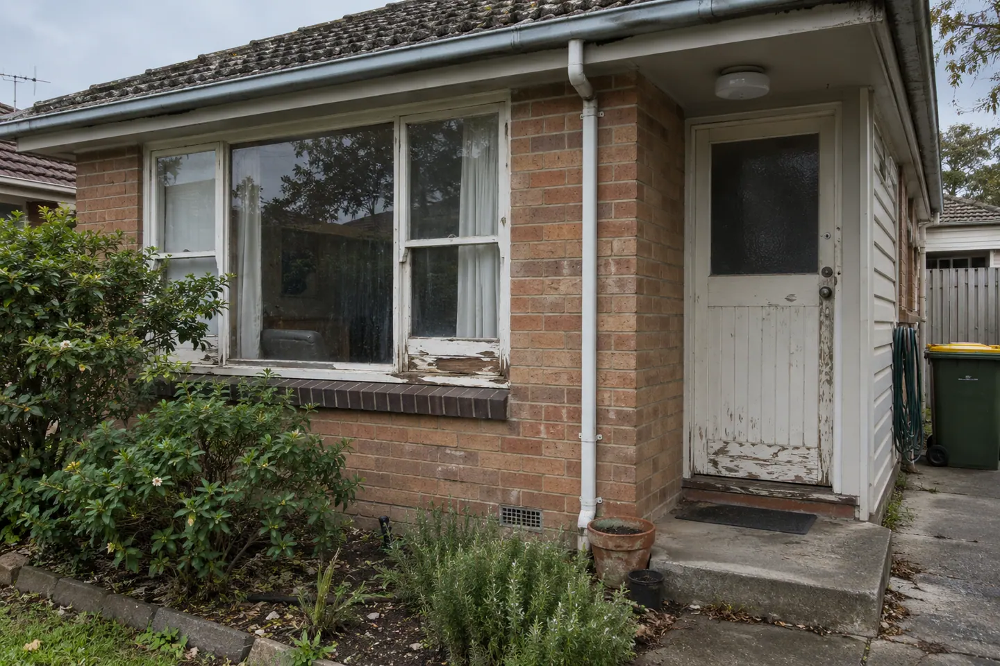
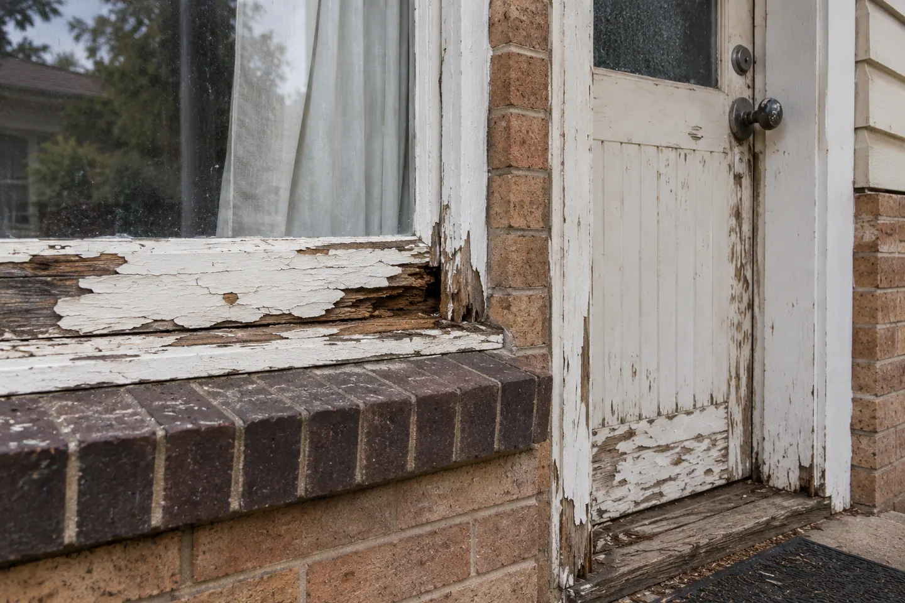
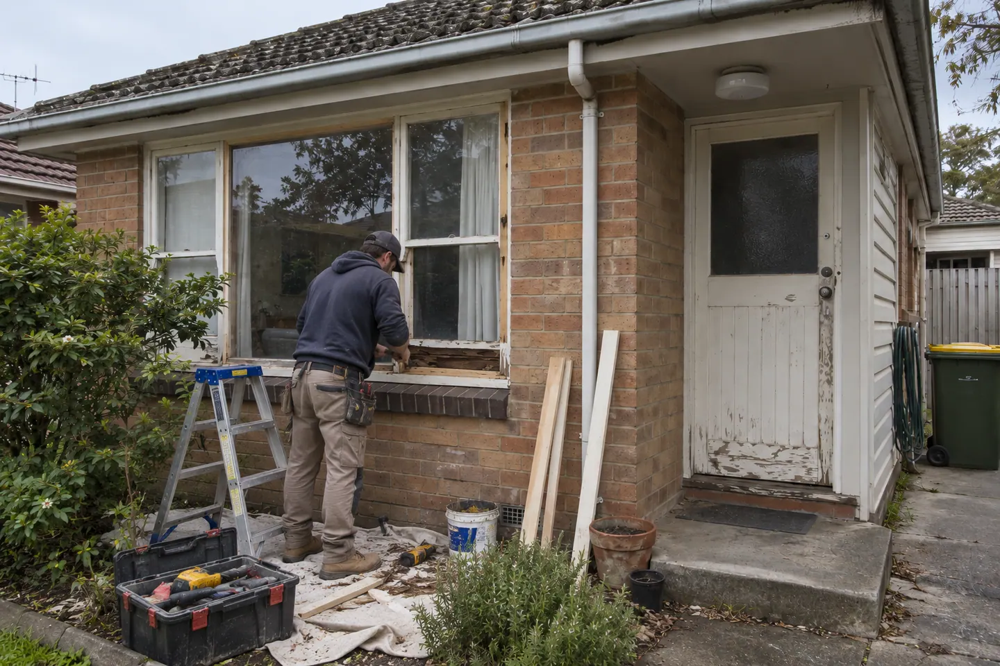
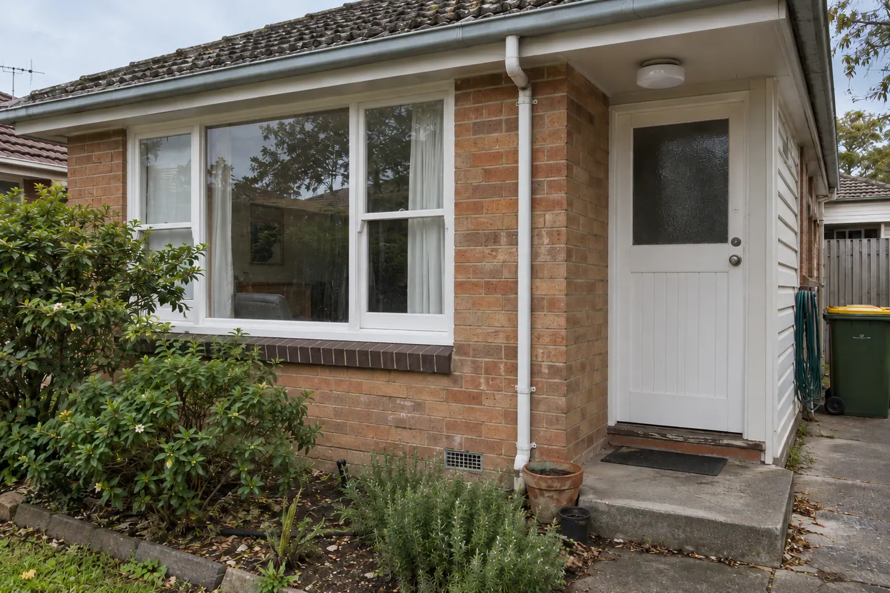

Recent project
Timber Door Repairs and Repainting
We repaired and repainted the timber door, repaired the timber window sill and replaced the window opening hardware.
The project
Timber door repairs and repainting
This job focused on timber door repairs and repainting. We also repaired the deteriorated timber window sill, touched up its paintwork and replaced the window opening hardware.
Scope
Timber door repairs and repainting, timber window sill repairs and paint touch-ups, and replacement of the window opening hardware.
Outcome
The final photograph shows the refinished timber door, window sill and surrounding exterior.
Project gallery
Timber repair details shown




Contact Ellis Perth
Timber Window Frame & Door Repairs in Perth
Contact Ellis directly to arrange an on-site assessment. Tell us what needs repairing and your Perth suburb or postcode. Existing photos and approximate measurements are optional; we inspect the property and confirm the repair plan and written quote.